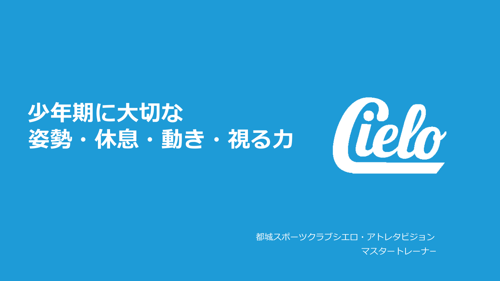
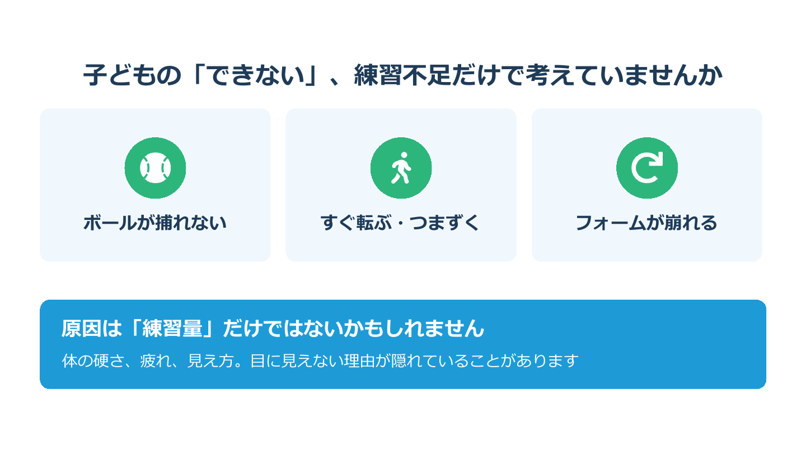
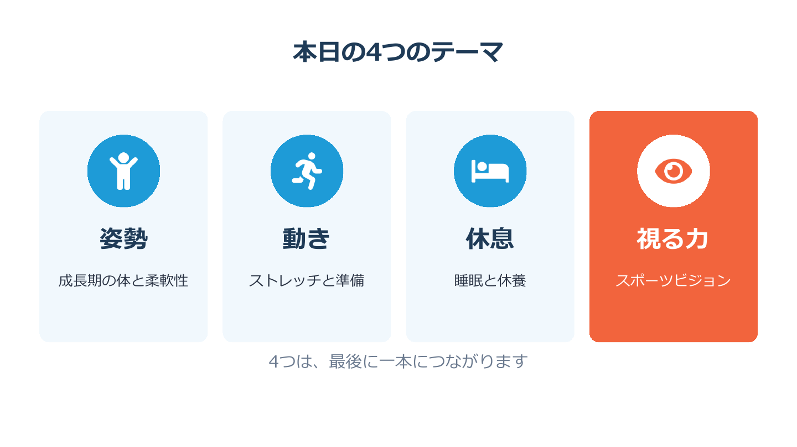

皆さん、こんにちは。本日はお忙しい中、お集まりいただきありがとうございます。
都城スポーツクラブシエロ、アトレタビジョンでマスタートレーナーをしています、（名前）です。
今日は「少年期に大切な姿勢・休息・動き・視る力」というテーマで、60分お話しします。途中で実際に体を動かしたり、高校生の動画を見たりする時間もありますので、どうぞ楽な気持ちで参加してください。

まず、ひとつ質問させてください。ボールがなかなか捕れない子。すぐに転んだり、つまずいたりする子。何度教えてもフォームが崩れてしまう子。皆さんの団にも、思い当たる子はいませんか。
進行会場を見回し、3秒ほど待つ。うなずいている方に軽く会釈する
そんなとき、私たちはつい「もっと練習しよう」と言ってしまいがちです。私もそうでした。
でも、もしかすると原因は練習の量ではないかもしれません。体が硬くなっているのかもしれない。疲れがたまっているのかもしれない。そもそも、ボールがしっかり見えていないのかもしれない。目に見えない理由が、実は隠れていることがあるんです。

子どもの体は、大人をそのまま小さくしたものではありません。
骨は今まさに伸びている途中です。筋肉は、その骨の伸びにまだ追いついていません。そして「見る力」も、実はまだ育っている途中なんです。
だからこそ、この時期にどんな体づくりをするかが、中学、高校、その先の土台になります。

今日は、4つのテーマでお話しします。
1つ目は姿勢。成長期の体と、体のやわらかさの話です。
2つ目は動き。ストレッチと、練習前の準備の話です。
3つ目は休息。睡眠と休養の話です。
そして4つ目が、視る力。スポーツビジョンと呼ばれるものです。
この4つは、バラバラの話ではありません。最後に一本の線でつながりますので、そこを楽しみに聞いていてください。